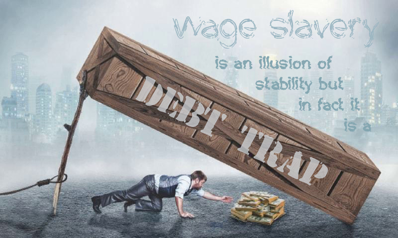
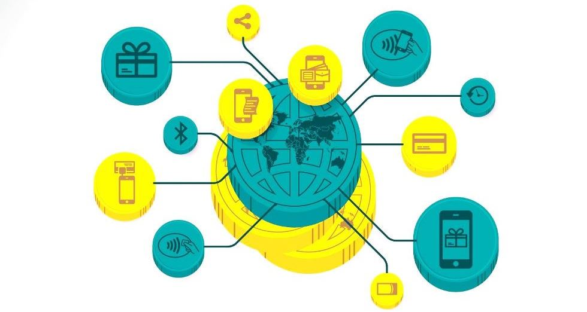
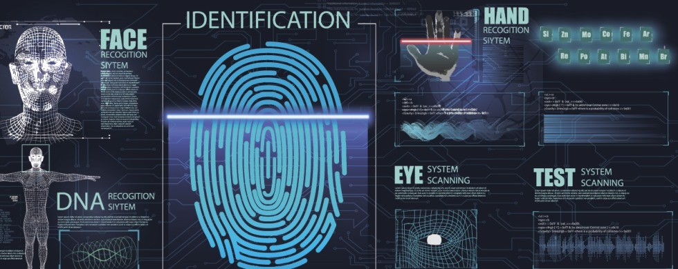

Intro
Every milestone of civilization begins with a crackpot idea once dismissed as unreasonable and unrealistic. But there comes a time when Utopian dreams become ripe enough to turn them into real-world policy.— Rutger Bregman
Society judges people by what they can do for others. So, the more people do the best they can, the more prosperous society is. And only people who do what they love to do, who use their talents and calling, are doing most for others.
The life is too short to spend it hating your job like 85% of the population according to Gallup's World Poll or not having any chances to get a suitable education, to become an ingenious scientist, artist or inventor due to poor living conditions.
The modern, flawed global economic system based on wage slavery can be disrupted from inside and abolished gradually.

THE MISSION OF PERSONO.ID IS TO PROVIDE PROPER LIVING CONDITIONS FOR EVERYONE TO IMPLEMENT TALENTS, TO FOLLOW DREAMS, MEANWHILE BREAKING OUT OF WAGE SLAVERY. THAT IS THE WAY TO SET THINGS RIGHT-SIDE-UP. IT IS TIME.
That is very cool per se, but the implementation of PERSONO.ID will also result in global consequences.
RECIPE
Imagine a distributed independent computer storage of personal data of all the people on Earth. It is reliable and protected. It provides one account per person with a built-in groundbreaking global independent digital monetary system where everyone gets a personal account as well. This money differs substantially from fiat money as well as from newfangled anonymous cryptocurrencies. The last but not least base ingredient is
UBI. Every citizen of PERSONO.ID will be getting a fixed amount regularly and unconditionally lifelong. All the data thoroughly guarded with crypto algorithms, break-resistant even in the post-quantum computer era.
These three base ingredients comprise PERSONO.ID. Further, you will see how the implementation of PERSONO.ID will turn over the world!
MIND-BOGGLING CONSEQUENCES
The following are the base side effects of PERSONO.ID implementation.
- GLOBAL DIGITAL IDENTITY
No more necessity to carry around identity documents with you. All you will need to register for a flight (or, virtually, anywhere), unlock digital door locks like to a hotel room or in any situation when you need to prove your identity, is you. Behind the scenes, your biometric and physiological data compared to the data verified and stored encrypted in PERSONO.ID thus confirming your identity without revealing sensitive info.
- PERSONAL DIGITAL SIGNATURE
Internet content will split into two parts: one is anonymous as it is has been from the very beginning and another, signed by an identified person. No worries: personal data is guarded and will not disclose. It will put an end to the infamous internet troll factories and targeted anonymous shaping public opinion. It is responsibility by reputation in action. And of course it is electronic voting and reliable, honest results on any issue any time using verified identities by real people.
- GLOBAL PERSONALIZATION
This feature will shift consumption and medicine to a whole new level. Think of impact when companies and researches will get free and unlimited access to sanitized personal data (where sensitive personal data removed from). There is no chance to reveal names, phone numbers or email, except for just an abstract identifier, so people will not be bothered directly with proposals and ads. But this priceless data will be used to submit precise proposals. Only this way they will be delivered to the person by AIVA (Artificial Intelligence Virtual Assistant). That's where personalization shines: from individual apparel to pills and healthcare in general.
- GLOBAL DIGITAL MONEY
A whole new global digital monetary system that is a means of payment first.
UBI is your airbag. No one should work to earn a living. Take a break, start learning and doing what you love. Only in this way people give to the world the best they can and get satisfaction and appreciation.
We should take care of providing proper conditions and environment for everyone.
- TOWARDS A HUMAN-CENTRIC WORLD
We got stuck in a socio-economic system where latent exploitation flourishes and wealth of the richest is increasing at the expense of others. There is something wrong with the world where 1% of the population owns over half of world wealth. It is the model of total capital power where people treated as economic resources for creating added value. In this model overwhelming majority is doomed to work for earning a leaving only, drowning in mortgage and credit debts pretending to be free and prosperous, but in fact - wage slaves.
We believe that quality of life, of the world we leave in, is measured by the number of happy people, living their lives, doing what they love to do, satisfied by giving to the world the best they can.
PERSONO.ID is non-commercial, and the pace of its implementation depends solely on support by rebels in heart, who don't accept modern wage slavery, who are thirsty for true freedom. Don't hesitate to
join early, don't miss very sweet bounties for early adopters. Only together we will make the world be a better place.
PERSONO.ID era
The verge of a breakthrough
Think of the PERSONO.ID core as an independent distributed network where every human gets a single everlasting, verified and approved, account. This account is the core of PERSONO.ID that, simply put, will be used for storing and processing personal data, digital money (cryptocurrency) transactions and balances. Groundbreaking integrated cryptocurrency is supposed to become, first and foremost, worldwide legal means of payments.
The persono.id core will serve queries of any application, identifying people and gathering anonymized personal data, for free.
PERSONO.ID gives real security and protection of your data: recovery, arbitration, reversible transactions. It will take care of your privacy using anonymization, a zero-knowledge proof protocol, and lattice-based cryptography.
PERSONO.ID is designated to help people to live their dreams instead of dreaming life. It will eliminate bothering about unemployment, influence medical care improvement, fight poverty and social inequality, bring freedom and responsibility, reshape manufacturing and consumption and more.
USE CASES
Below is a list of issues, naturally resolved by PERSONO.ID side effects. Many of the solutions borrowed from other areas of life like banking, logistics, insurance, security and so on.
- Authentication and Authorisation
Your biometric data (fingerprints, photo, palm, veins, walk or signature patterns, etc.) is scanned, wrapped (hashed) and queried to PERSONO.ID to verify your identity, that you are the one who you say you are and that your data is genuine. That is called authentication. Then the verifier compares your UPID (Universal PERSONO.ID) with the verifier's authorization data to get and apply permissions. It allows to unlock digital locks like to hotel rooms, cars, and identify you and get your credentials for virtually anything: log in to sites, enter your bank accounts and more. Basically, with PERSONO.ID you won't have to take anything except yourself with you to prove your identity. Though additional protection using contemporary technologies sometimes would make the process faster and easier: your mobile phone, ID-card with a display, etc.
- Voting
That is where responsibility comes up on the stage whether you want to “like” a post or vote on polls or presidential elections. Just imagine: any person on the earth can vote on any issue anytime and the results are immediate and completely reliable. Every post, like and vote is either anonymous or verified. Isn't it cool?
- Trust and reputation
All Internet data will split into anonymous (untrusted) and verifiable (trusted). No more trolls, fake news, and, generally, unsigned thus untrusted info. Signing your words makes being responsible for them by reputation.
- Personal data under control
Personal data is under total control of the owner with no extra efforts. Anonymized part is open to anyone, but the sensitive private data requires special authorization from the owner thanks to the technology of derivative keys.
- Anonymized data
Anonymized data (where personal sensitive info removed from) is a groundbreaking solution changing the principles of consumption. People have houses, kids, cars, etc. We consume food, according to health and diet; clothes, according to body sizes; car service, depending on the model, year, and technical condition; households and other goods and services of our preferences and needs. To prevent fakes, only the verified PERSONO.ID "citizens" can sign and publish their anonymized personal data, defining their demands.
You’ll get proposals fitting your requirements and preferences. Publish your precise body measurements and style preferences anonymized, and there’s no more clothes and shoes that don't fit. Publish your diet preferences and constraints to get only relevant offers. It is a revolution in the consumer sector.
Just imagine how that will impact consumption! You will get offers of the right things and services right when you need them. This way will we overcome the infamous overconsumption problem at last! And forget about ads pursuing you all over the place should you search the Internet for something your mom asked.
Priceless anonymized personal data (your e-mail, phone number, address even your name is not available) from PERSONO.ID is available for free. Think about how fast researchers of all kinds would advance having such data at hand!
- Social relations
Remember Anonymized data? Well, your social relations are not a subject of trading by social networks anymore. That is sort of your private address book: no more zillions of fake friends.
- Classifieds
In the context of PERSONO.ID, digital classifieds are just a free service. There is no need in a specific platform or extra, paid, resources.
- Personalized medicine
Personalized medicine will become widely adopted practices using your PERSONO.ID relevant data. Think about PERSONO.ID as your family archive as well. Your descendants will appreciate your care because your data will help them to determine their heredity.
- Paramedics
In case of emergency, a paramedic scans your fingerprints, palms, iris, face, probably makes a DNA express-test, and gets all relevant data from PERSONO.ID within seconds to save your life, using personal special medical one-time emergency authorization..
- Urgent situation
In case of lost kids, relatives, pets, etc., time is vital and notifying people nearby increases chances for success dramatically. What if you need urgent help? People around often help more efficiently than the police. Direct SOS message prevents the effect of an "uncertain situation" in a crowd when everyone seems paralyzed while an immediate reaction is required.
- Find people
Look for people with converging interests: investors, crowdfunding, employers, soul mates, a dating service. Anonymized data provides privacy. You'll be informed when someone wants to get in touch with you if you wish.
- Proof of ownership
Proving and verifying your ownership rights for content or virtually anything has never been easier.
- Your AIVA
AIVA is your personal Artificial Intelligence Virtual Assistant. Another groundbreaking concept. AIVA will process, collect and analyze your anonymized data. It will continually learn and self-improve striving to be your best faithful assistant so that you won't spend your valuable lifetime for routine tasks.
- Messenger
As public keys are open and available in profiles, it’s a cinch to have the most secure in the world messenger free service.
- Passing away
We’re mortal. C’est la vie. But what happens to the PERSONO.ID account after the owner passes away? Whatever you want actually. It’s a matter of your will. You may hand over rights to your successors. The account itself changes its status to archived but never disappears. Most people want to leave some heritage and a message for descendants and also important data like biological including DNA and medical data that will be invaluable for them as we have previously noted.
The list is open. There are plenty of outstanding applications of PERSONO.ID to discover that will change life for the better.
Check out a PERSONO.ID global digital monetary system
CRYP, our
PLAN or the
TECH part.
CRYP

5 CRYP concepts
«CRYP» is a draft title for a global groundbreaking independent distributed decentralized crypto-monetary system, human-oriented, managed transparently, reasonably and democratically.
- Legal means of payment first
It should be widely adopted first to become a legal means of payment. We found a way to achieve it. Imagine a global cryptocurrency that is functioning and regulated independently and accepted all over the world.
We have to reach lots of agreements.
- UBI
We come to this world for a relatively short period of time. This lifetime is the most valuable thing in the world. We believe that every human should get UBI. Everyone should have equal starting terms to realize calling and an opportunity to take a break without a threat to be left destitute.
IF YOU DON'T BUILD YOUR DREAM, YOU'LL BE HIRED TO BUILD OTHERS' DREAMS
There are many disputes on UBI. UBI experiments in isolated communities are most objective compared to others as they model comprehensive utilization of UBI. The results are positive and very exciting. But the opponents of UBI preach it doesn't squeeze into the current economy and tax system. So, if those are obstacles on the way to freedom, why don't we change it? System changes are hard, especially in democratic societies. But no one will notice your opinion if your voice not heard. As a result, we have strikes all over the world.
But PERSONO.ID will change that. No one should be exploited and work to live. No more excuses for that. Getting a fixed amount unconditionally and regularly should be a base human right. It is hard to disseminate UBI widely due to many economic and politic factors, but we believe that the widespread of PERSONO.ID will change the situation fundamentally.
Anyway, all PERSONO.ID citizens will be getting UBI lifelong.
- Secure and protected the human way
Current anonymous cryptocurrencies declare "absolute security" meaning your balances and transactions stored publicly but anonymously, and your private key, used for signing transactions, cannot be discovered computationally in a reasonable time using modern computers.
But it misses property protection rights due to anonymity. Besides, that anonymity is by no means perfect. Any notion of your private info like e-mail, delivery address, or phone number, linked to your crypto-wallet address, exposes all your shopping history.
Keys from a house or a bank account replaced if lost or stolen. Hardly will you agree to lose all your money or home just because someone got your keys because those are your private properties and protected by the law. That what protection and security the human way is.
-
No losses
-
There is no chance to lose all of your savings due to a lost or stolen secret (private) key, software errors or bugs.
- Secure transactions
- No double-spending, no Sybil attacks, no DDOS. Effectively encrypted.
- Protected accounts
-
Arbitration of fraudulent transactions (hence reversible transactions), criminal liability for attempts to steal CRYPs, preventive security measures borrowed from other life areas: banking, anti-hijack systems, biometric identification from fingerprint to iris, face recognition or veins pattern, etc.
- Fraud and crack resistance
-
The best way to protect from any violence trials is to make them meaningless like a bank money transfer case with a built-in cash destroying system activated in case of an attempt of intrusion. Both Sybil attack and stealing private keys are as meaningless as signing and publishing plagiarism. What if you loose lost your key? Say goodbye to your money in any crypto, should you lose your private key, but not to CRYP because all you need to restore access to your PERSONO.ID is you.
- Privacy concerned
-
Zero-knowledge proof of transactions algorithms and lattice-based cryptography will keep your PERSONO.ID accounts private. Balances and transactions are encrypted, so others can only check validity and consistency, so your account numbers and balances are hidden.
- Free
All transactions will be free as well as personal info storage for the end-users. Node keepers incentivized based on the time their nodes were elected transaction validators (
Raft consensus), and some other criteria like uptime and processing correctness.
- Issue and regulation
CRYP issuing ("minting") and eliminating ("burning") are openly regulated by voting and applying only proven algorithms.
We should regard all aspects of contemporary economics and lessons learned to keep the new monetary system stable and make thoughtful decisions on "printing" and "burning" CRYPs.
Imagine how the world would look like when we hit billions of PERSONO.ID accounts with cryptocurrency CRYPs within them, being stored and processed in a distributed and independent way.
Please take a look at the
PLAN or maybe you're interested in some
TECH details.
Plan
Good news is that most problems and tasks on the way to bringing PERSONO.ID to life already resolved in other spheres and now only need to be adapted and combined.
TODO
- Protocol
-
A protocol describes the rules and procedures of PERSONO.ID functioning and usage. Core requirements and limitations are: decentralized, privacy protected, recoverable account, arbitration of transactions, feeless transactions, hacking and fraud smart protection, proof of identity, proof of ownership. Most of the listed above have been resolved to some extent, so we have a great base to start with. PERSONO.ID core protocol envisioned as the foundation of true human-centric distributed Web 3.0.
- Implement protocol
-
This is what is called a software development process. Create a literate architecture and then implement it in programming code and data, develop applications and services by the protocol, fix bugs, issue new versions and repeat this common software development cycle.
- CRYPto-currency + UBI out of the box
-
The key idea is that the system will be semi-auto regulated based on micro- and macro-economy and the relevant world experiences and lessons learned. Just like a contemporary airplane: automation under the pilot's control.
- Spread PERSONO.ID
-
When core PERSONO.ID implemented, we will start expansion: invite and queue newcomers for account approval by several random independent members with interactive visualization and data public monitoring.
- Develop add-ins
-
Applications and services comprising PERSONO.ID ecosystem are by no means less important than the core. There are numerous useful apps to be created to bring more happiness to the world.
HOW TO DO
The best minds of my generation are thinking about how to make people click ads.
— Jeffrey Hammerbacher
- Involve people
Here we are looking forward to involving the best minds to do something really great for all humanity. These are experts on digital identity management systems, skillful software engineers and architects, mathematicians, cryptographers, economists, biologists, banking and security experts. We need to incentivize lots of specialists to bring to life such an ambitious system.
- Establish a Foundation
To complete the first two on the list we establish the PERFO: PERSONO.ID Independent Non-profit Foundation.
The primary PERFO's goal is to give a boost to and support PERSONO.ID core implementation as well as financing and investing in other related to PERSONO.ID projects.
- Incentivize
To encourage new members to register early and wait for approval the system will reward with
UBI from the moment of registration in a queue for an approval. The only difference with approved accounts is that it can be used only after approval. New members are checked and approved by several
independent PERSONO.ID members.
Extremely attractive
bounties are waiting for the early adopters.
Tech part

Core tech (preface)
A matter of trust
Open Distributed Data Systems ODDS-like blockchains, DAG, Hashgraph built on the same basis: cryptography with the fundamental theorem of arithmetic, modular arithmetic, discrete logarithm problem, encryption algorithms in its core to name a few. You need to have math brains to grasp all the staff. An average person is unable to check whether those are true, thus compelled to trust some smart-looking people, data and formulas. But should we really trust?
Is it really secure?
CRYPtocurrency is digital transactions and balances data distributed independently and freely publicly and coherently on many independent (we're told so) computers simultaneously forming a cryptocurrency network.
"Classic" blockchain cryptocurrency is more like cash in a wallet, but, from the law point of view, it is as valuable as a scrap of paper. Strictly speaking, the owner of your crypto-wallet is not you, the owner is anyone, who gets your private key. And there's no way to state or proof otherwise.
Regular users shouldn't have to go into it like we can drive a car or use the Internet without knowing their mechanics and engineering. Still, we should be aware of some core features of all ODDS: the data is stored openly and available anytime to anyone. Lately, there appeared implementations of Zero-knowledge proof, promising that there are only proofs of transactions published and those proofs are enough to check and approve transactions, thus keeping sensitive info secret. Theoretically, this provides anonymity, but there are also some fundamental problems with existing implementations for now preventing it from becoming a silver bullet.
Let alone continuous growth of private keys successful hackings (stealing private keys, exploiting multiple software vulnerabilities), it is possible to calculate your private key from your public key (wallet number, basically), but considered impractical using modern computational capabilities and brute force method (trying all possible combinations). On the other hand, as far as we know, there are no algorithms to figure out a private key in a reasonable time. We're assured that the core large numbers prime factoring problem (solve it and you'll get all crypto coins in the world) has not been resolved for more than a thousand years. Well, the famous Caesar's cipher was used for several hundred years and was broken (the breaking method was published, to be exact) only 800 years later.
Points of failure
Let's not forget about the fact that all that math and algorithms work only when implemented, programmed. And the resulting program code itself, as well as code executing (running) environment: an OS, a compiler, an interpreter, are potential points of security failure. Sometimes programmers make mistakes or leave "backdoors" maliciously in the program code, which leads to hacking a good-looking secure software.
Implication
All this has a very simple and straightforward implication: staying anonymous and relying on pure math and crypto algorithms lead to very controversial security at the end of the day.
TODO
As soon as the movement to the true Web 3.0 with ODDS in its core is inevitable, one of our primary tasks is awareness of security problems and technical and organizational readiness for the situation when the large number prime factoring problem resolved, quantum computer is up and running, brute forcing all existing crypto protected data, and other vulnerabilities. Those are multifactor authorization, arbitration, and recoverability, zero-knowledge proof and PoI (Proof of Identity) as the basis.
Almost ready
Most technical issues, necessary for PERSONO.ID implementation, are already resolved to some extent. Today we have all necessary technologies available, but fragmented. The secret sauce recipe is Raft mixed with Raiblocks (Nano) on the basis of PoI emerging protocol and zero-knowledge proof or a lattice-based cryptography approach.
- CONSENSUS
-
Leader nodes (Raft protocol) are randomly selected and changed frequently to prevent fraud. Although PERSONO.ID identification itself makes fraud trials meaningless, frequent change of leader nodes provides additional protection from possible abuse.
-
CORE
-
Raiblocks (Nano nowadays) protocol fits great. In block-lattice we trust too! Everyone will get personal blockchain for storing and managing personal data as well as managing cryptocurrency.
- Privacy
-
Privacy is provided via anonymization by zero-knowledge proof, lattice-based cryptography, PoI, and other identity-based schemes.
- PRIVATE BANKING
-
Full-fledged private independent distributed banking is at your service.
We'll create a groundbreaking, crypto-protected at the protocol level, digital monetary system
CRYP. It is a distributed public ledger where balances and transactions are private and encrypted and publicly available. Zero-knowledge proof, lattice-based and homomorphic cryptography and PoI ensure this.
- SECURITY
-
The best security method is to make any kind of attack senseless like stealing a case with money where the cash destroyed on a breaking attempt. Your data and transactions are secure at the protocol level. Zero-knowledge proof and lattice-based cryptography with PoI come to stage again.
-
Arbitration
-
Transactions are allowed only from active PERSONO.ID identity accounts.If they steal your money, it will transfer to a particular account, and you may call for arbitration.
-
Recoverability
-
In case your PERSONO.ID identity compromised, you can always regenerate it, marking the disclosed one as invalid. As simple as that.
Key element
A key element is people. Technologies, algorithms, science are continually evolving: new math discoveries made, algorithms found, technologies developed by humans. To provide the best security, functionality, usability, we need cutting-edge achievements, so, one of our primary tasks is to involve and incentivize people for R&D in this area.
Join
Almost ready
Today we have most issues of PERSONO.ID already resolved to some extent. We also have all the necessary technologies available, but quite fragmented. It's like a thousand-piece puzzle we need to gather and restore missing pieces. We stake at comprehensive research to find effective cross-sectoral solutions.
Point of decision
Now you have to make a decision having what economists call an adverse selection.
We cannot compensate for your lack of confidence. Just grasp what PERSONO.ID is, listen to your heart and if your gut feeling is positive, please join PERSONO.ID to start getting your
UBI charged early. You might also be interested in getting some GUT transitional tokens at very sweet rates.
PERFO & Transitional Coin Offer
PERFO stands for Persono.id Independent Non-profit Foundation. The mission of PERFO is to arrange necessary financing to provide development of PERSONO.ID core and complementary software and services comprising PERSONO.ID ecosystem.
Transitional Coin Offer TCO is an initial offer of transitional GUT tokens that will be converted subsequently to
CRYP at 1:1 rate to the corresponding PERSONO.ID accounts.
Ways to join and support PERSONO.ID
- Support
Help to spread the word about PERSONO.ID in social networks and blogs. Use
#persono.id or
#persono-id hashtag and the link
http://persono.id, then send an e-mail with your full name and links (URL addresses) to your posts to
promo@persono.id or join PERSONO.ID
community and post your promo to the
#promo room. When PERSONO.ID is up and running, your UBI will be summarized starting from the date of your e-mail or post and deposited to your account. If you also
get some GUT, please include your wallet address in the promo e-mail or post and your GUT amount will double when transferred to PERSONO.ID network.
- Grab some GUT at special exchange rates
Double check the contract address where you are sending ETH is the one above!
The exchange rate depends on the total ETH raised by the moment of a succeeding investment transaction.
First 100.000 ETH go to the PERFO (PERSONO.ID Foundation) in exchange for 3000 GUTs each. Every following ETH in the range from 100.001 to 300.000 will be exchanged at 1500 GUTs per ETH and so on:
| Total ETH already raised when you invest |
GUTs for 1 ETH |
| >0 |
≤100.000 |
3000 |
| >100.000 |
≤300.000 |
1500 |
| >300.000 |
≤700.000 |
500 |
| >700.000 |
≤1.500.000 |
125 |
|
Up to 1.5 mln ETH will be accepted to PERFO in exchange for GUT and transfered to PERSONO.ID accounts afterwards.
The distribution of GUT will be discontinued as soon as either PERSONO.ID core is up and running or we hit the 1.5 mln ether goal.
|
Final words
PERSONO.ID is our lifework. We believe that PERSONO.ID is the cornerstone of true freedom and worldwide democracy and genuine Web 3.0. We are committed to bringing PERSONO.ID to life.
If you feel positive about PERSONO.ID, please do not hesitate to join and support.
Thank you!
FAQ
-
Where's "Our team" section? How can I figure out if I can trust you?
-
There's no such section. Let's get it straight: in an unregulated anarchy area like cryptocurrencies, the vast majority of ICOs represent just a well packed sweet looking presentations, where even "team's" social profiles are mere fakes in many cases. Anyway, founders don't have any obligations, so investing in anonymous crypto, you are always buying a pig in a poke. Hopefully, this will be one of the last crowdfunding with what economists call an adverse selection. PERSONO.ID will bring to the world certainty provided and protected by personal responsibility. Another reason is that many large ICO has undergone attacks, fraud, phishing, etc., using fake team-like accounts and posts. We do not propagate being the best team ever, aiming at involving as many talents as possible instead. For now, listen to your heart and use your gut feeling. Join as soon as you're ready and consider up to over 20 times more bounties for innovators and early adopters.
-
Why do you need funding? How are you going to use it?
-
PERSONO.ID is a non-profit enterprise. The GUT token is not a utility nor an equity token. The only purpose of it is to provide fundings in ETH to develop the PERSONO.ID network in exchange for GUT tokens that will transfer to the PERSONO.ID network later. PERSONO.ID
CRYP is intended to become a global legal means of payment first. Implementation depends highly on the society and on really talented software engineers, mathematicians, cryptographers, economists, lawyers and even GR managers which will help to bring PERSONO.ID to life. That's where the foundation will spend its funds.
-
Where is your project timeline and roadmap?
-
We have a
plan, and we are getting
PERFO funded first. After that it will take roughly a year or so to develop the core protocol and approximately the same time to implement the PERSONO.ID core.
-
Will you refund if PERSONO.ID fails to launch?
-
We don't have Soft Cap, and we are not going to wait until PERFO gets a certain amount to start. We are flexible and will operate as it comes. We will continue promotion in case the funding level is lower than expected until finally get planned amounts. PERSONO.ID is a core global non-commercial independent lifelong enterprise.
-
What is your GUT exchange rate forecast?
-
We don't have any. The GUT is a transitional token with two goals: get fundings for PERSONO.ID and later move it to PERSONO.ID built-in cryptocurrency. We call the crypto-crowdfunding for PERSONO.ID TCO: Transitional Coins Offer. Exchanging ETH for GUT tokens is a mid- or long-term investment with impressive benefits up to 3000 times. Please check out the TCO
bounties.
-
Who are stakeholders and decisions makers?
-
There are no key stakeholders and centralization in decision making is not acceptable. The base is a consensus. We just set the first building block and give a boost. Further, the whole thing will be publicly regulated. Protocol, cryptocurrency, everything can be changed if better solutions are accepted. Just like any public issue, that's one of the primary PERSONO.ID goals.
-
How is PERSONO.ID secured against fake accounts?
-
It will be secure at the protocol level. Every account is verified and approved by other people. It would be naive to account on a 100% protection from fake accounts appearance and their occasional approval, just like there exist fake passports of pretty good quality that are hard to reveal. We will fund the development of Artificial Intelligence services for detecting fraudulent accounts, as well as drafting rules and procedures to eliminate those.
-
How about attacks like Sybil and the penny spend?
-
Attacks of all kind are attractive for intruders in public open anonymous networks because they steal not violating the laws. The fundamental right to private property does not apply there. First wave cryptocurrencies are no more than a computer game assets bought for fiat money in terms of the law.
PERSONO.ID was born to change that. Any attack at PERSONO.ID from within the network is meaningless. It is like robbing a bank leaving there your passport, fingerprints and without a mask in front of cameras. Anonymous attacks from outside are technically impossible. In particular, a Sybil attack only achievable in a pseudonymous environment and a Penny spend attack easily prevented by restricting the transaction intensity of the violator.
Credits